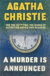
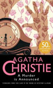
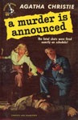
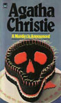
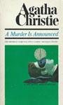

1950 - A Murder Is Announced
Considered a crime novel classic, the book was heavily promoted upon publication in 1950 as being Christie's fiftieth book, although in truth this figure could only be arrived at by counting in both UK and US short story collections. The storyline had previously been explored in Christie's Miss Marple short story The Companion, where the characters also lived in Little Paddocks.





Screen Versions
The novel was adapted by Alan Plater and filmed in 1985 with Joan Hickson as Miss Marple. Only a few changes were made: Mitzi was renamed Hannah and is said to be Swiss (in the book, her nationality is unknown) and in the novel the vicarage cat was male and called Tiglath Pileser. In the film the cat was female and called Delilah.
In 2005, it was part of the first season of the ITV series Agatha Christie's Marple which featured Geraldine McEwan as Miss Marple. While the basic plot is retained from the novel, most of the characters in this adaptation have been heavily altered.


1985
2005
Miss Marple
-
Joan Hickson
Geraldine McEwan
Miss / Letitia Blacklock
-
Ursula Howells
Zoë Wanamaker
Edmund Swettenham
-
Matthew Solon
Christian Coulson
Mrs. / Sadie Swettenham
-
Mary Kerridge
Cherie Lunghi
Phillipa Haymes
-
Nicola King
Keeley Hawes
Miss / Amy Murgatroyd
-
Joan Sims
Claire Skinner
Miss / Lizzie Hinchcliffe
-
Paola Dionisotti
Frances Barber
Colonel Easterbrook
-
Ralph Michael
Robert Pugh
Mrs. Easterbrook
-
Sylvia Syms
-
Patrick Simmons
-
Simon Shepherd
Matthew Goode
Julia Simmons
-
Samantha Bond
Sienna Guillory
Miss / Dora Bunner
-
Renée Asherson
Elaine Paige
Rudi Schertz
-
Tim Charrington
Christian Pedersen
Hannah / Mitzi Kosinski
-
Elaine Ives-Cameron
Catherine Tate
Myrna Harris
-
Liz Crowther
Nicole Lewis
Rowlandson
-
David Pinner
Richard Dixon
Detective Inspector Craddock
-
John Castle
Alexander Armstrong
Detective Sergeant Fletcher
-
Kevin Whately
Gerard Horan
Reverend Harmon
-
David Collings
-
Mrs. Harmon
-
Vivienne Moore
-
Rydesdale
-
Richard Bebb
-
Bluebird Cafe Waitress
-
Victoria Williams
-
Belle Goedler
-
Joyce Carey
Virginia McKenna
Nurse McClelland
-
Kay Gallie
Lesley Nicol
Director
-
David Giles
John Strickland
Screenplay
-
Alan Plater
Stewart Harcourt